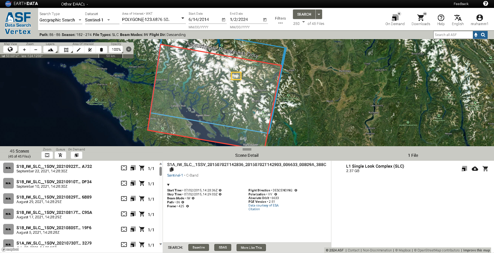
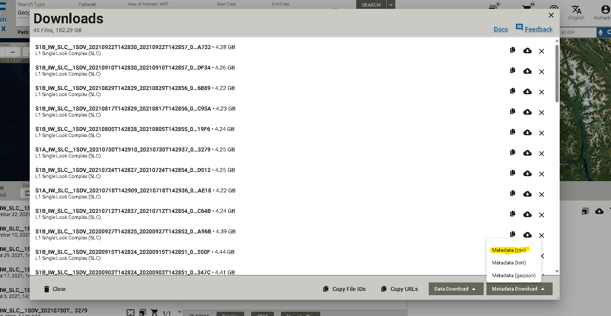
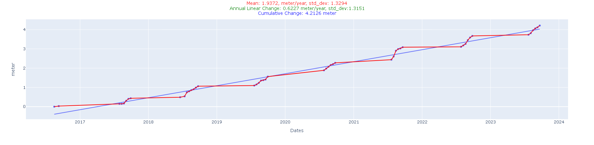
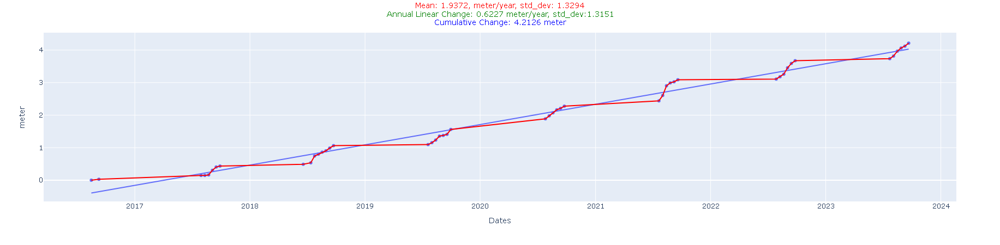

Morenney Rock Glacier Radar Imagery Example¶
Prepare Data for Bulk Download¶
Akhdefo processes radar imagery that has been corrected for radiometric and terrain distortions. Its function, ‘download_RTC,’ enables the downloading of Synthetic Aperture Radar (SAR) products from ASF’s HyP3 platform. Users can easily order RTC, AutoRIFT, and InSAR products with just a few lines of Python script. Firstly, users are advised to visit ASF’s website to download metadata for their chosen time-series product granules. To assist users, example screenshots are provided below as a guide to navigate through the process.
 Import AkhDefo Packages.¶
[1]:
#Functions for data preparations
import akhdefo_functions
from akhdefo_functions import download_RTC
from akhdefo_functions import read_data_prep
from akhdefo_functions import move_files_with_string
from akhdefo_functions import Crop_to_AOI
#Functions data processing
from akhdefo_functions import scatter_area_mask
from akhdefo_functions import Raster_Correction
from akhdefo_functions import radar_flow_akhdefo
#Functions for shapefile point data interpolation to raster geotif
#Function Autovariogram use Kriging method it fits the data to different variogram models and automatically use the best fit variogram model (Computationally Heavy but you can process data in chunks)
from akhdefo_functions import Auto_Variogram
# interpoate_xyz uses the following interpolation methods (nearest, linear and cubic)
from akhdefo_functions import interpolate_xyz
#Functions for data Visualization and Analysis
from akhdefo_functions import MeanProducts_plot_ts
from akhdefo_functions import plot_stackNetwork
from akhdefo_functions import akhdefo_viewer
from akhdefo_functions import akhdefo_dashApp
---------------------------------------------------------------------------
ImportError Traceback (most recent call last)
Cell In[1], line 11
9 from akhdefo_functions import scatter_area_mask
10 from akhdefo_functions import Raster_Correction
---> 11 from akhdefo_functions import radar_flow_akhdefo
13 #Functions for shapefile point data interpolation to raster geotif
14 #Function Autovariogram use Kriging method it fits the data to different variogram models and automatically use the best fit variogram model (Computationally Heavy but you can process data in chunks)
15 from akhdefo_functions import Auto_Variogram
ImportError: cannot import name 'radar_flow_akhdefo' from 'akhdefo_functions' (C:\Users\mahmud\anaconda3\envs\akhdefov2\lib\site-packages\akhdefo_functions\__init__.py)
Download Data using EarthData ASF Account¶
[2]:
'''
First Run the below command and make sure {download=False} to see the granule paths and frames.
Its highly recommended to use data frame same path for the entire time-series for more accurate results
'''
# download_RTC( prompt=True, asf_datapool_results_file= './data/morenny/radar/asf-datapool-results-2023-12-19_04-01-18.csv',
# save_dir= './data/morenny/radar/path129', job_name= './data/morenny/radar/RockGlacier_asc',
# dem_matching= False,
# include_dem= False,
# include_inc_map= True,
# include_rgb = False,
# include_scattering_area= True,
# scale = 'power',
# resolution = 20,
# speckle_filter= False,
# radiometry='gamma0',
# dem_name='copernicus', limit=None , download=False , path_number=129, RTC=False)
[2]:
' \n\nFirst Run the below command and make sure {download=False} to see the granule paths and frames. \n\nIts highly recommended to use data frame same path for the entire time-series for more accurate results\n \n'
Extract downloaded zip files¶
[3]:
#This functions extracts data from all the granuples zip directory.
read_data_prep(zip_dir='./data/morenny/radar/path129_rtc/',
image_dir='./data/morenny/radar/RS_dir_path129',
ext_image_file='VV.tif', udm_mask_dir='./data/morenny/radar/scatter_dir', ext_udm_mask_file='area.tif')
---------------------------------------------------------------------------
FileNotFoundError Traceback (most recent call last)
Cell In[3], line 2
1 #This functions extracts data from all the granuples zip directory.
----> 2 read_data_prep(zip_dir='./data/morenny/radar/path129_rtc/',
3 image_dir='./data/morenny/radar/RS_dir_path129',
4 ext_image_file='VV.tif', udm_mask_dir='./data/morenny/radar/scatter_dir', ext_udm_mask_file='area.tif')
File ~\anaconda3\envs\akhdefov2\lib\site-packages\akhdefo_functions\Unzip_CopyFiles.py:205, in read_data_prep(zip_dir, image_dir, ext_image_file, udm_mask_dir, ext_udm_mask_file, search_string)
203 #dst_dir=unzip_dir
204 zipdir=zip_dir
--> 205 zip_list = [f for f in sorted(os.listdir(zipdir)) if isfile(join(zipdir, f))]
207 for n in tqdm (range(0, len(zip_list)) , desc="Processing Zip Files"):
208 with ZipFile(join(zipdir,zip_list[n]), 'r') as zipObject:
FileNotFoundError: [WinError 3] The system cannot find the path specified: './data/morenny/radar/path129_rtc/'
[4]:
# This function will move all the data from each granules subdir to a single folder
move_files_with_string(source_dir='./data/morenny/radar/RS_dir_path129', dest_dir='./data/morenny/radar/RS_path129', search_string='.tif')
move_files_with_string(source_dir='./data/morenny/radar/scatter_dir', dest_dir='./data/morenny/radar/scatter_rs', search_string='area.tif')
[5]:
'''
Optional:
Create an accumulated scatter area mask from a set of raster images based on a given threshold.
the input dataset is taken from ASF RTC processing.
The scattering area for each pixel in the RTC image in square meters.
The values are calculated based on the effectively illuminated gamma-0 terrain surface using a digital elevation model,
the local incidence angle map, and the layover-shadow map. see detailes
at the following website https://hyp3-docs.asf.alaska.edu/guides/rtc_product_guide/#scattering-area-map
The function processes each raster image in the input folder, crops it based on the provided AOI from the shapefile,
normalizes the cropped raster, and then converts the normalized image to a binary mask based on the scatter_percentageArea_threshold.
The binary masks from each raster are then accumulated to generate the final scatter area mask.
'''
input_folder = "./data/morenny/radar/scatter_rs"
output_folder = "./data/morenny/radar/scatter_masks_20"
plot_folder = "./data/morenny/radar/scatter_mask_plots_20"
shapefile_path = "./data/morenny/AOI.shp"
scatter_Area_threshold=5
vegetation_mask_path=None
#scatter_area_mask(input_folder, output_folder, plot_folder, shapefile_path, scatter_Area_threshold, vegetation_mask_path)
[6]:
'''
Crop all raster to Area of interest bounding box
'''
Crop_to_AOI(Path_to_WorkingDir='./data/morenny/radar/RS_path129/',
Path_to_AOI_shapefile='./data/morenny/AOI.shp',
output_CroppedDir='./data/morenny/radar/RS_cropped_path129', file_ex='.tif')
0it [00:00, ?it/s]
Preparing raster for radar flow and displacement calculation!¶
By deafult RTC data comes in the below three formats. The below raster correction function converts the below RTC data formats to Unassigned 8 bit integer(“uint8”).
Power Scale: SAR images in the power scale represent the square of the amplitude. Power is a measure of the energy of the radar signal returned from each point on the ground. It’s more intuitive in terms of energy interpretation but less used for visual interpretation due to its non-linear nature.
Amplitude Scale: The amplitude scale is a direct representation of the radar signal’s strength received from each point. It’s more commonly used for visual interpretation since it’s more linear than the power scale. Amplitude images are easier to interpret but can be sensitive to noise.
Decibel (dB) Scale: The decibel scale is a logarithmic scale used to express SAR data. It’s derived from the amplitude or power scale and is used to compress the dynamic range of the SAR data. The dB scale is beneficial for enhancing certain features in the data, especially in areas with very high or very low backscatter.
[7]:
import warnings
warnings.filterwarnings("ignore")
Raster_Correction(input_path="./data/morenny/radar/RS_cropped_path129", output_path="./data/morenny/radar/RS_cropped_path129_filt", limit=None,
lowpass_kernel_size=None, bilateral_win_size=7, bilateral_sigma_color=75,
bilateral_sigma_spatial=75,
clip_percentiles=[2, 98], radar=False,
scale='power', Vegetation_mask=None)
---------------------------------------------------------------------------
TypeError Traceback (most recent call last)
Cell In[7], line 5
1 import warnings
2 warnings.filterwarnings("ignore")
----> 5 Raster_Correction(input_path="./data/morenny/radar/RS_cropped_path129", output_path="./data/morenny/radar/RS_cropped_path129_filt", limit=None,
6 lowpass_kernel_size=None, bilateral_win_size=7, bilateral_sigma_color=75,
7 bilateral_sigma_spatial=75,
8 clip_percentiles=[2, 98], radar=False,
9 scale='power', Vegetation_mask=None)
TypeError: Raster_Correction() got an unexpected keyword argument 'radar'
Applying radar flow and producing time-series deformation products.¶
[8]:
import warnings
warnings.filterwarnings("ignore")
import akhdefo_functions
akhdefo_functions.radar_flow_akhdefo(input_dir='./data/morenny/radar/RS_cropped_path129_filt', output_dir='./data/morenny/radar/geo_path129', AOI='./data/morenny/AOI.shp', zscore_threshold=2,
ssim_thresh=0.6, image_resolution='20m', interpolate='kriging',
show_figure=False, point_size=2, dem_path='./data/morenny/dem.tif', smoothing_kernel_size=None,
Vegetation_mask=None, VEL_scale='year', VEL_Mode='linear', good_match_option=0.75,
hillshade_option=True, shapefile_output=True, max_triplet_interval=300, pixel_size=20, num_chunks=1, overlap_percentage=0, pyr_scale=0.5, levels=15,
winsize=128, iterations=7, poly_n=7, poly_sigma=1.5,
flags=1, master_reference='single',
selection_Mode='pair', start_date=None, end_date=None, krig_method='universal', spatial_ref=True, use_detrend=False)
---------------------------------------------------------------------------
AttributeError Traceback (most recent call last)
Cell In[8], line 4
2 warnings.filterwarnings("ignore")
3 import akhdefo_functions
----> 4 akhdefo_functions.radar_flow_akhdefo(input_dir='./data/morenny/radar/RS_cropped_path129_filt', output_dir='./data/morenny/radar/geo_path129', AOI='./data/morenny/AOI.shp', zscore_threshold=2,
5 ssim_thresh=0.6, image_resolution='20m', interpolate='kriging',
6 show_figure=False, point_size=2, dem_path='./data/morenny/dem.tif', smoothing_kernel_size=None,
7 Vegetation_mask=None, VEL_scale='year', VEL_Mode='linear', good_match_option=0.75,
8 hillshade_option=True, shapefile_output=True, max_triplet_interval=300, pixel_size=20, num_chunks=1, overlap_percentage=0, pyr_scale=0.5, levels=15,
9 winsize=128, iterations=7, poly_n=7, poly_sigma=1.5,
10 flags=1, master_reference='single',
11 selection_Mode='pair', start_date=None, end_date=None, krig_method='universal', spatial_ref=True, use_detrend=False)
AttributeError: module 'akhdefo_functions' has no attribute 'radar_flow_akhdefo'
Interpolate and Create raster Velocities¶
[9]:
import akhdefo_functions
from akhdefo_functions import Auto_Variogram
Auto_Variogram(data='./data/morenny/radar/geo_path129/temp_shapefile_dir/updated_shapefiles/20150717_20230921_20230921_N.shp', column_attribute='VEL'
, pixel_size=20, num_chunks=41, out_fileName='N', geo_folder='./data/morenny/radar/VEL_Folder', plot_folder='./data/morenny/radar/VEL_Folder'
, smoothing_kernel=3, latlon=False, aoi_shapefile='./data/morenny/AOI.shp' , krig_method='universal')
Auto_Variogram(data='./data/morenny/radar/geo_path129/temp_shapefile_dir/updated_shapefiles/20150717_20230921_20230921_E.shp', column_attribute='VEL'
, pixel_size=20, num_chunks=4, out_fileName='E', geo_folder='./data/morenny/radar/VEL_Folder', plot_folder='./data/morenny/radar/VEL_Folder'
, smoothing_kernel=3, latlon=False, aoi_shapefile='./data/morenny/AOI.shp', krig_method='universal')
Auto_Variogram(data='./data/morenny/radar/geo_path129/temp_shapefile_dir/updated_shapefiles/20150717_20230921_20230921_2DVEL.shp', column_attribute='VEL'
, pixel_size=20, num_chunks=4, out_fileName='2DVEL', geo_folder='./data/morenny/radar/VEL_Folder', plot_folder='./data/morenny/radar/VEL_Folder'
, smoothing_kernel=3, latlon=False, aoi_shapefile='./data/morenny/AOI.shp', krig_method='universal')
Auto_Variogram(data='./data/morenny/radar/geo_path129/temp_shapefile_dir/updated_shapefiles/20150717_20230921_20230921_2DVEL.shp', column_attribute='aspect'
, pixel_size=20, num_chunks=4, out_fileName='aspect', geo_folder='./data/morenny/radar/VEL_Folder', plot_folder='./data/morenny/radar/VEL_Folder'
, smoothing_kernel=3, latlon=False, aoi_shapefile='./data/morenny/AOI.shp', krig_method='universal')
kriging succeed with Model: Integral and score: 0.9695274735136724
kriging succeed with Model: Rational and score: 0.9203140253785103
kriging succeed with Model: Stable and score: 0.9905602486686372
Error with model Matern: Optimal parameters not found: The maximum number of function evaluations is exceeded.
Error with model Integral: Optimal parameters not found: The maximum number of function evaluations is exceeded.
kriging succeed with Model: Stable and score: 0.9383296532507905
[9]:
array([[ nan, nan, nan, ..., nan,
nan, nan],
[ nan, nan, nan, ..., nan,
nan, nan],
[ nan, nan, nan, ..., nan,
nan, nan],
...,
[315.04217299, 313.07659983, 310.69084892, ..., nan,
nan, nan],
[ nan, 313.19708601, 310.77554702, ..., nan,
nan, nan],
[ nan, nan, 310.84613466, ..., nan,
nan, nan]])
Visualize Displacement Products¶
[10]:
import akhdefo_functions
import cmocean.cm as cmo
akhdefo_functions.akhdefo_viewer(path_to_dem_file='./data/morenny/basemap.tif', raster_file='./data/morenny/radar/VEL_Folder/2DVEL_universal.tif', output_folder='./data/morenny/radar/Figs_analysis/', title='2D Velocity with Vector Motion',
pixel_resolution_meters=None, output_file_name="2DVEL_WithVectorMotion.png",
alpha=0.4, unit_conversion=None, no_data_mask=True,
colormap='hot_r', min_value=None, max_value=None,
normalize=True, colorbar_label='meter/year', show_figure=True, aspect_raster='./data/morenny/radar/VEL_Folder/aspect_universal.tif', cmap_aspect='hsv' , step=5)
[11]:
#Visualize Mean Velocity East-West
# if set batch_plot=True it will plot static time series figure for each date acquisition
import akhdefo_functions
akhdefo_functions.MeanProducts_plot_ts(path_to_shapefile='./data/morenny/radar/geo_path129/temp_shapefile_dir/updated_shapefiles/20150717_20230921_20230921_E.shp',
dem_path='./data/morenny/dem.tif', out_folder='./data/morenny/radar/Figs_analysis/E',
color_field="VEL", Set_fig_MinMax=True,
MinMaxRange=[-0.2, 0.2], opacity=0.7,
cmap='bwr', point_size=10,
cbar_label='East-West (m/year)',
batch_plot=False)
#Visualize Mean Velocity North-South
akhdefo_functions.MeanProducts_plot_ts(path_to_shapefile='./data/morenny/radar/geo_path129/temp_shapefile_dir/updated_shapefiles/20150717_20230921_20230921_N.shp',
dem_path='./data/morenny/dem.tif', out_folder='./data/morenny/radar/Figs_analysis/N',
color_field="VEL", Set_fig_MinMax=False,
MinMaxRange=[0, 1.5], opacity=0.7,
cmap='bwr', point_size=10,
cbar_label='North-South (m/year)',
batch_plot=False)
#Visualize Mean Velocity 2D Velocity
akhdefo_functions.MeanProducts_plot_ts(path_to_shapefile='./data/morenny/radar/geo_path129/temp_shapefile_dir/updated_shapefiles/20150717_20230921_20230921_2DVEL.shp',
dem_path='./data/morenny/dem.tif', out_folder='./data/morenny/radar/Figs_analysis/2D',
color_field="VEL", Set_fig_MinMax=False,
MinMaxRange=[-0.5, 0.5], opacity=0.7,
cmap='plasma', point_size=10,
cbar_label='2D-VEL (meter/year)',
batch_plot=False, plot_inverse_Vel=True)
Interactive Time Series Analysis in a Dash Web App¶
This plot is part of an interactive web application. Users have the ability to select groups of data points using either the box select or lasso tool, which are superimposed on a satellite image base map. The selected data will then be reflected in the time series chart. Additionally, users can customize the axis labels to suit their dataset; for example, if the dataset measures displacement or velocity in meters, the y-axis label can be adjusted accordingly from the default mm. Furthermore, users can download their analysis and the generated figures directly from the web application.
 


[12]:
import akhdefo_functions
akhdefo_functions.akhdefo_dashApp(
Path_to_Shapefile='./data/morenny/radar/geo_path129/temp_shapefile_dir/updated_shapefiles/20150717_20230921_20230921_2DVEL.shp',
port=8057, BaseMap=True, basemap_type='image')
[13]:
akhdefo_dashApp(
Path_to_Shapefile='./data/morenny/radar/geo_path129/temp_shapefile_dir/updated_shapefiles/20150717_20230921_20230921_N.shp',
port=8056, BaseMap=True, basemap_type='image')
---------------------------------------------------------------------------
NameError Traceback (most recent call last)
Cell In[13], line 1
----> 1 akhdefo_dashApp(
2 Path_to_Shapefile='./data/morenny/radar/geo_path129/temp_shapefile_dir/updated_shapefiles/20150717_20230921_20230921_N.shp',
3 port=8056, BaseMap=True, basemap_type='image')
NameError: name 'akhdefo_dashApp' is not defined
[14]:
akhdefo_dashApp(
Path_to_Shapefile='./data/morenny/radar/geo_path129/temp_shapefile_dir/updated_shapefiles/20150717_20230921_20230921_E.shp',
port=8055, BaseMap=True, basemap_type='image')
---------------------------------------------------------------------------
NameError Traceback (most recent call last)
Cell In[14], line 1
----> 1 akhdefo_dashApp(
2 Path_to_Shapefile='./data/morenny/radar/geo_path129/temp_shapefile_dir/updated_shapefiles/20150717_20230921_20230921_E.shp',
3 port=8055, BaseMap=True, basemap_type='image')
NameError: name 'akhdefo_dashApp' is not defined
Plot Mean Land Surface Temperature for months July and August 2017 to 2021¶
[15]:
import os
import akhdefo_functions
from osgeo import gdal
import tempfile
import numpy as np
import datetime
import re
import pandas as pd
import ee
import pandas as pd
import matplotlib.pyplot as plt
import numpy as np
import matplotlib.pyplot as plt
import pandas as pd
import seaborn as sns # For enhanced plot styling
from scipy.stats import linregress
import geopandas as gpd
directory_path = './data/morenny/LST/'
basemap_path = './data/morenny/basemap.tif'
# Read the projection from the basemap
basemap_ds = gdal.Open(basemap_path)
basemap_proj = basemap_ds.GetProjection()
# List all files in the specified path
entries = os.listdir(directory_path)
mean_values = []
filenames = []
dates=[]
date_pattern = r'\d{4}\d{2}\d{2}' # Adjust this pattern based on your filename date format
def extract_year_from_string(s):
# Regular expression pattern to find a four-digit year
pattern = r'\d{4}'
match = re.search(pattern, s)
if match:
# Return the matched year
return match.group()
else:
return None
# Test the function
for f in entries:
full_path = os.path.join(directory_path, f)
if full_path.endswith('.tif'):
file_name = os.path.basename(full_path)
# Create a temporary file for the reprojected raster
temp_outputname = os.path.join(tempfile.gettempdir(), f'reprojected_{file_name}')
# Reproject the raster to match the basemap's projection
gdal.Warp(destNameOrDestDS=temp_outputname,
srcDSOrSrcDSTab=full_path,
dstSRS=basemap_proj)
####################
# Open the reprojected raster and calculate its mean
ds = gdal.Open(temp_outputname)
band = ds.GetRasterBand(1)
data = band.ReadAsArray()
mean_value = np.nanmean(data) # Exclude no-data values
filenames.append(file_name)
match = re.search(date_pattern, file_name)
year=extract_year_from_string(file_name)
mean_values.append(mean_value)
dates.append(year)
#################
# Call your custom function with the necessary parameters
akhdefo_functions.akhdefo_viewer(
path_to_dem_file='./data/morenny/basemap.tif',
raster_file=temp_outputname,
output_folder='./data/morenny/radar/Figs_analysis/',
title=file_name,
pixel_resolution_meters=None,
output_file_name=file_name,
alpha=0.4,
unit_conversion=None,
no_data_mask=True,
colormap='spring_r',
min_value=None,
max_value=None,
normalize=True,
colorbar_label='meter/year',
show_figure=True,
aspect_raster='./data/morenny/radar/VEL_Folder/aspect.tif',
cmap_aspect='hsv',
step=5
)
ds = None
band=None
os.remove(temp_outputname)
# Find date in the filename
[ ]:
[16]:
import ee
import pandas as pd
import matplotlib.pyplot as plt
import numpy as np
import matplotlib.pyplot as plt
import pandas as pd
import seaborn as sns # For enhanced plot styling
from scipy.stats import linregress
import geopandas as gpd
# Initialize the Earth Engine module.
ee.Initialize()
# Define your area of interest (AOI) using latitude and longitude
lat = 42.99
lon = 76.99
point = ee.Geometry.Point([lon, lat])
# Define a 5km by 5km square around the point
#square = point.buffer(500).bounds() # Buffer by 4000 meters (4 km) and get bounds
square=ee.Geometry.BBox(76.9868751901, 42.9914296961, 77.0048813882, 43.0093232151)
# Cloud mask function
def maskL8sr(col):
cloudShadowBitMask = 1 << 3
cloudsBitMask = 1 << 5
qa = col.select('pixel_qa')
mask = qa.bitwiseAnd(cloudShadowBitMask).eq(0).And(qa.bitwiseAnd(cloudsBitMask).eq(0))
return col.updateMask(mask)
# Load and process the Landsat 8 Image Collection
col = ee.ImageCollection('LANDSAT/LC08/C01/T1_SR').map(maskL8sr).filterDate('2017-03-01', '2024-10-01').filterBounds(square)
# Function to calculate LST for each image in the collection
def calculateLST(image):
ndvi = image.normalizedDifference(['B5', 'B4']).rename('NDVI')
a = ee.Number(0.004)
b = ee.Number(0.986)
LST = image.expression('(Tb/(1 + (0.00115 * (Tb / 1.438)) * log(Ep)))-273.15', {
'Tb': image.select('B10').multiply(0.1),
'Ep': ndvi.multiply(a).add(b)
}).rename('LST')
return image.addBands(LST)
# Add LST band to each image in the collection
lstCol = col.map(calculateLST)
# Function to add a 'year' property to each image
def addYear(image):
date = ee.Date(image.get('system:time_start'))
year = ee.Number(date.get('year')).toInt()
return image.set('year', year)
# Apply the addYear function to each image in the collection
lstCol = lstCol.map(addYear)
# Filter for July and August
julAugCol = lstCol.filter(ee.Filter.calendarRange(7, 8, 'month'))
julAugCol=lstCol
# Calculate the mean LST for each year
yearlyMean = ee.ImageCollection.fromImages(
ee.List.sequence(2017, 2023).map(lambda year:
julAugCol.filter(ee.Filter.eq('year', year)).mean().set('year', year)
)
)
# Function to extract data
def extract_data(image):
mean_dict = image.reduceRegion(reducer=ee.Reducer.mean(), geometry=square, scale=30).getInfo()
return mean_dict.get('LST', None) # Use get method with a default value of None
# Extract the mean LST for each year and convert to a Pandas DataFrame
data = []
years = []
for year in range(2017, 2021):
image = ee.Image(yearlyMean.filter(ee.Filter.eq('year', year)).first())
lst_value = extract_data(image)
if lst_value is not None:
data.append(lst_value)
years.append(year)
df = pd.DataFrame({'Year': years, 'LST': data})
import pandas as pd
import plotly.graph_objects as go
import plotly.express as px
# Fitting a linear model to the data
slope, intercept, r_value, p_value, std_err = linregress(df['Year'], df['LST'])
# Calculate the line of best fit
df['Trendline'] = intercept + slope * df['Year']
# Create a Plotly figure
fig = px.scatter(df, x='Year', y='LST', title='Mean LST for July and August (2017-2021) with Trendline')
# Add a scatter plot for Mean LST
fig.add_trace(go.Scatter(x=df['Year'], y=df['LST'], mode='markers', name='Mean LST'))
# Add a trendline
fig.add_trace(go.Scatter(x=df['Year'], y=df['Trendline'], mode='lines', name='Trendline'))
# Calculate the rate of change annotation
rate_of_change = slope
# Annotate the rate of change in the legend
fig.add_trace(go.Scatter(x=[None], y=[None], mode='markers', marker=dict(size=0),
name=f'Rate of Change: {rate_of_change:.2f}°C/year'))
# Customize the appearance
fig.update_traces(marker=dict(size=8))
fig.update_layout(legend_title_text='Legend')
# Show the plot
fig.show()
---------------------------------------------------------------------------
RefreshError Traceback (most recent call last)
Cell In[16], line 13
9 import geopandas as gpd
12 # Initialize the Earth Engine module.
---> 13 ee.Initialize()
15 # Define your area of interest (AOI) using latitude and longitude
16 lat = 42.99
File ~\anaconda3\envs\akhdefov2\lib\site-packages\ee\_utils.py:39, in accept_opt_prefix.<locals>.opt_fixed.<locals>.wrapper(*args, **kwargs)
37 if new_key not in kwargs:
38 kwargs[new_key] = old_key_val
---> 39 return func(*args, **kwargs)
File ~\anaconda3\envs\akhdefov2\lib\site-packages\ee\__init__.py:149, in Initialize(credentials, url, cloud_api_key, http_transport, project)
143 if not project and oauth.is_sdk_credentials(credentials):
144 raise EEException(
145 'ee.Initialize: no project found. '
146 'Call with project= or see Earth Engine Authentication docs.'
147 )
--> 149 data.initialize(
150 credentials=credentials,
151 api_base_url=(url + '/api' if url else None),
152 tile_base_url=url,
153 cloud_api_base_url=url,
154 cloud_api_key=cloud_api_key,
155 project=project,
156 http_transport=http_transport,
157 )
159 # Initialize the dynamically loaded functions on the objects that want them.
160 ApiFunction.initialize()
File ~\anaconda3\envs\akhdefov2\lib\site-packages\ee\data.py:225, in initialize(credentials, api_base_url, tile_base_url, cloud_api_base_url, cloud_api_key, project, http_transport)
222 if _requests_session is None:
223 _requests_session = requests.Session()
--> 225 _install_cloud_api_resource()
227 if project is not None:
228 _cloud_api_user_project = project
File ~\anaconda3\envs\akhdefov2\lib\site-packages\ee\data.py:312, in _install_cloud_api_resource()
310 timeout = (_deadline_ms / 1000.0) or None
311 assert _requests_session is not None
--> 312 _cloud_api_resource = _cloud_api_utils.build_cloud_resource(
313 _cloud_api_base_url,
314 _requests_session,
315 credentials=_credentials,
316 api_key=_cloud_api_key,
317 timeout=timeout,
318 headers_supplier=_make_request_headers,
319 response_inspector=_handle_profiling_response,
320 http_transport=_http_transport,
321 )
323 _cloud_api_resource_raw = _cloud_api_utils.build_cloud_resource(
324 _cloud_api_base_url,
325 _requests_session,
(...)
332 raw=True,
333 )
File ~\anaconda3\envs\akhdefov2\lib\site-packages\ee\_cloud_api_utils.py:198, in build_cloud_resource(api_base_url, session, api_key, credentials, timeout, headers_supplier, response_inspector, http_transport, raw)
193 resource = None
194 try:
195 # google-api-python-client made static_discovery the default in version 2,
196 # but it's not backward-compatible. There's no reliable way to check the
197 # package version, either.
--> 198 resource = build(static_discovery=False)
199 except TypeError:
200 pass # Handle fallback case outside except block, for cleaner stack traces.
File ~\anaconda3\envs\akhdefov2\lib\site-packages\ee\_cloud_api_utils.py:182, in build_cloud_resource.<locals>.build(**kwargs)
181 def build(**kwargs):
--> 182 return discovery.build(
183 'earthengine',
184 VERSION,
185 discoveryServiceUrl=discovery_service_url,
186 developerKey=api_key,
187 http=http_transport,
188 requestBuilder=request_builder,
189 model=alt_model,
190 cache_discovery=False,
191 **kwargs)
File ~\anaconda3\envs\akhdefov2\lib\site-packages\googleapiclient\_helpers.py:130, in positional.<locals>.positional_decorator.<locals>.positional_wrapper(*args, **kwargs)
128 elif positional_parameters_enforcement == POSITIONAL_WARNING:
129 logger.warning(message)
--> 130 return wrapped(*args, **kwargs)
File ~\anaconda3\envs\akhdefov2\lib\site-packages\googleapiclient\discovery.py:287, in build(serviceName, version, http, discoveryServiceUrl, developerKey, model, requestBuilder, credentials, cache_discovery, cache, client_options, adc_cert_path, adc_key_path, num_retries, static_discovery, always_use_jwt_access)
284 requested_url = uritemplate.expand(discovery_url, params)
286 try:
--> 287 content = _retrieve_discovery_doc(
288 requested_url,
289 discovery_http,
290 cache_discovery,
291 serviceName,
292 version,
293 cache,
294 developerKey,
295 num_retries=num_retries,
296 static_discovery=static_discovery,
297 )
298 service = build_from_document(
299 content,
300 base=discovery_url,
(...)
309 always_use_jwt_access=always_use_jwt_access,
310 )
311 break # exit if a service was created
File ~\anaconda3\envs\akhdefov2\lib\site-packages\googleapiclient\discovery.py:422, in _retrieve_discovery_doc(url, http, cache_discovery, serviceName, version, cache, developerKey, num_retries, static_discovery)
419 # Execute this request with retries build into HttpRequest
420 # Note that it will already raise an error if we don't get a 2xx response
421 req = HttpRequest(http, HttpRequest.null_postproc, actual_url)
--> 422 resp, content = req.execute(num_retries=num_retries)
424 try:
425 content = content.decode("utf-8")
File ~\anaconda3\envs\akhdefov2\lib\site-packages\googleapiclient\_helpers.py:130, in positional.<locals>.positional_decorator.<locals>.positional_wrapper(*args, **kwargs)
128 elif positional_parameters_enforcement == POSITIONAL_WARNING:
129 logger.warning(message)
--> 130 return wrapped(*args, **kwargs)
File ~\anaconda3\envs\akhdefov2\lib\site-packages\googleapiclient\http.py:923, in HttpRequest.execute(self, http, num_retries)
920 self.headers["content-length"] = str(len(self.body))
922 # Handle retries for server-side errors.
--> 923 resp, content = _retry_request(
924 http,
925 num_retries,
926 "request",
927 self._sleep,
928 self._rand,
929 str(self.uri),
930 method=str(self.method),
931 body=self.body,
932 headers=self.headers,
933 )
935 for callback in self.response_callbacks:
936 callback(resp)
File ~\anaconda3\envs\akhdefov2\lib\site-packages\googleapiclient\http.py:191, in _retry_request(http, num_retries, req_type, sleep, rand, uri, method, *args, **kwargs)
189 try:
190 exception = None
--> 191 resp, content = http.request(uri, method, *args, **kwargs)
192 # Retry on SSL errors and socket timeout errors.
193 except _ssl_SSLError as ssl_error:
File ~\anaconda3\envs\akhdefov2\lib\site-packages\google_auth_httplib2.py:209, in AuthorizedHttp.request(self, uri, method, body, headers, redirections, connection_type, **kwargs)
205 # Make a copy of the headers. They will be modified by the credentials
206 # and we want to pass the original headers if we recurse.
207 request_headers = headers.copy() if headers is not None else {}
--> 209 self.credentials.before_request(self._request, method, uri, request_headers)
211 # Check if the body is a file-like stream, and if so, save the body
212 # stream position so that it can be restored in case of refresh.
213 body_stream_position = None
File ~\anaconda3\envs\akhdefov2\lib\site-packages\google\auth\credentials.py:228, in Credentials.before_request(self, request, method, url, headers)
226 self._non_blocking_refresh(request)
227 else:
--> 228 self._blocking_refresh(request)
230 metrics.add_metric_header(headers, self._metric_header_for_usage())
231 self.apply(headers)
File ~\anaconda3\envs\akhdefov2\lib\site-packages\google\auth\credentials.py:191, in Credentials._blocking_refresh(self, request)
189 def _blocking_refresh(self, request):
190 if not self.valid:
--> 191 self.refresh(request)
File ~\anaconda3\envs\akhdefov2\lib\site-packages\google\oauth2\credentials.py:390, in Credentials.refresh(self, request)
372 if (
373 self._refresh_token is None
374 or self._token_uri is None
375 or self._client_id is None
376 or self._client_secret is None
377 ):
378 raise exceptions.RefreshError(
379 "The credentials do not contain the necessary fields need to "
380 "refresh the access token. You must specify refresh_token, "
381 "token_uri, client_id, and client_secret."
382 )
384 (
385 access_token,
386 refresh_token,
387 expiry,
388 grant_response,
389 rapt_token,
--> 390 ) = reauth.refresh_grant(
391 request,
392 self._token_uri,
393 self._refresh_token,
394 self._client_id,
395 self._client_secret,
396 scopes=scopes,
397 rapt_token=self._rapt_token,
398 enable_reauth_refresh=self._enable_reauth_refresh,
399 )
401 self.token = access_token
402 self.expiry = expiry
File ~\anaconda3\envs\akhdefov2\lib\site-packages\google\oauth2\reauth.py:365, in refresh_grant(request, token_uri, refresh_token, client_id, client_secret, scopes, rapt_token, enable_reauth_refresh)
356 (
357 response_status_ok,
358 response_data,
(...)
361 request, token_uri, body, headers=metrics_header
362 )
364 if not response_status_ok:
--> 365 _client._handle_error_response(response_data, retryable_error)
366 return _client._handle_refresh_grant_response(response_data, refresh_token) + (
367 rapt_token,
368 )
File ~\anaconda3\envs\akhdefov2\lib\site-packages\google\oauth2\_client.py:72, in _handle_error_response(response_data, retryable_error)
69 except (KeyError, ValueError):
70 error_details = json.dumps(response_data)
---> 72 raise exceptions.RefreshError(
73 error_details, response_data, retryable=retryable_error
74 )
RefreshError: ('invalid_grant: Token has been expired or revoked.', {'error': 'invalid_grant', 'error_description': 'Token has been expired or revoked.'})
[17]:
import pandas as pd
import matplotlib.pyplot as plt
import numpy as np
import seaborn as sns
from scipy.stats import linregress
# Load the CSV file
file_path = './data/morenny/LST/Mean_LST_Jul_Aug_2017_to_2023.csv'
data = pd.read_csv(file_path)
# Display the first few rows of the dataframe to understand its structure
data.head()
# Selecting relevant columns
data = data[['year', 'LST']]
# Removing any null/NaN values
data.dropna(inplace=True)
# Ensuring 'year' is an integer
data['year'] = data['year'].astype(int)
# Correcting the line plot code
plt.figure(figsize=(10, 6))
sns.scatterplot(data=data, x='year', y='LST', color='blue', s=50)
# Plotting the regression line
sns.lineplot(x=data['year'], y=line, color='red')
# Annotating the rate of change
rate_of_change = f"Rate of Change: {slope:.2f} °C/year"
plt.text(data['year'].min(), data['LST'].max(), rate_of_change, fontsize=12, color='green')
# Setting plot titles and labels
plt.title('Yearly Mean Land Surface Temperature (LST) Trend', fontsize=14)
plt.xlabel('Year', fontsize=12)
plt.ylabel('Mean LST (°C)', fontsize=12)
plt.grid(True)
# Show plot
plt.show()
---------------------------------------------------------------------------
NameError Traceback (most recent call last)
Cell In[17], line 28
25 sns.scatterplot(data=data, x='year', y='LST', color='blue', s=50)
27 # Plotting the regression line
---> 28 sns.lineplot(x=data['year'], y=line, color='red')
30 # Annotating the rate of change
31 rate_of_change = f"Rate of Change: {slope:.2f} °C/year"
NameError: name 'line' is not defined